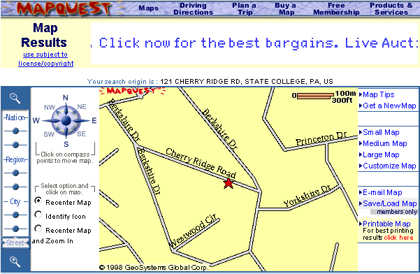
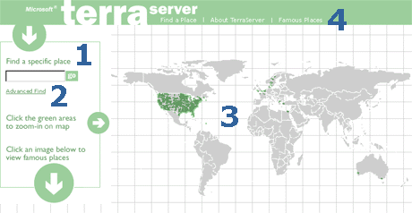
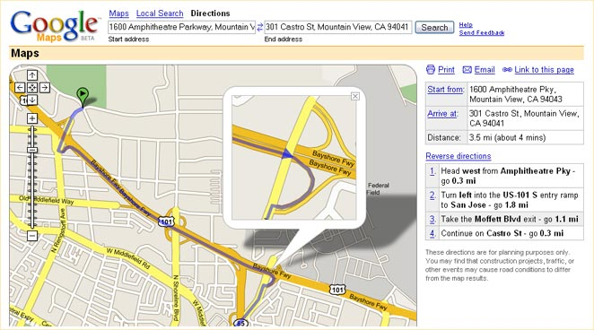
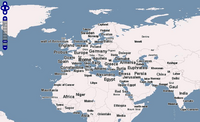

Leaflet.js
An Open-Source JavaScript Library for Mobile-Friendly Interactive Maps
Created by Brice McIver
History of web mapping
- 1993
- Xerox PARC Map Viewer

History of web mapping
- 1996
- MapQuest
- 
- 1998
- Terraserver USA
- 
- 2004
- OpenStreetMap
- Feb 2005
- Google Maps
- 
- June 2005
- OpenLayers
- 

- First released in 2011
- Developed by Vladimir Agafonkin
- Used by Flickr, Foursquare, Pinterest, craigslist, GitHub
<html>
<head lang="en">
<title>Leaflet Demo</title>
<link rel="stylesheet" href="http://cdn.leafletjs.com/leaflet-0.7.3/leaflet.css" />
<script src="http://cdn.leafletjs.com/leaflet-0.7.3/leaflet.js"></script>
</head>
<body>
<div id="map" style="height: 600px"></div>
<script>
var osmUrl = 'http://{s}.tile.openstreetmap.org/{z}/{x}/{y}.png',
osmAttrib = '© <a href="http://openstreetmap.org/copyright">OpenStreetMap</a>
contributors',
osm = L.tileLayer(osmUrl, {maxZoom: 18, attribution: osmAttrib});
var map = L.map('map').setView([39.034672, -94.587095], 15).addLayer(osm);
L.marker([39.034672, -94.587095]).addTo(map);
</script>
</body>
</html>L.marker([39.034672,
-94.587095])
.addTo(map)
.bindPopup('South Plaza
' +
'816-561-5100
' +
'5105 Main Street
Kansas City, MO 64112')
.openPopup();var deliveryArea =
L.polygon([
[39.063267,-94.571687],
[38.991554,-94.575668],
[38.99328,-94.630396],
[39.025985,-94.630423],
[39.026252,-94.627748],
[39.027435,-94.627286],
[39.028952,-94.625849],
[39.032919,-94.625891],
[39.033536,-94.621235],
[39.052502,-94.621321],
[39.057201,-94.623038],
[39.061949,-94.625548],
[39.064881,-94.621772],
[39.064665,-94.613038]
]).addTo(map);
map.fitBounds(deliveryArea.getBounds());Geometry Types
- Polyline
- MultiPolyline
- Polygon
- MultiPolygon
- Rectangle
- Circle
deliveryArea.on('mouseover', function(e) {
e.target.setStyle({
color: '#666',
fillColor: 'yellow'
});
});
deliveryArea.on('mouseout', function(e) {
e.target.setStyle({
color: '#03f',
fillColor: '#03f'
});
});Styles
- stroke
- color
- weight
- opacity
- fill
- fillColor
- fillOpacity
- dashArray
- lineCap
- lineJoin
Events
- click
- dblclick
- mousedown
- mouseover
- mouseout
- contextmenu
- add
- remove
- popupopen
- popupclose
Tile Layer
URL template is a string of the following form:
http://{s}.somedomain.com/blabla/{z}/{x}/{y}.png{s}— one of the available subdomains{z}— zoom level{x}and{y}— tile coordinates
You can use custom keys in the template like this:
L.tileLayer('http://{s}.somedomain.com/{foo}/{z}/{x}/{y}.png',
{foo: 'bar'});Example Tile Providers
MapQuest
http://developer.mapquest.com/web/products/open/map
var mqSubdomains = [
'otile1','otile2', 'otile3', 'otile4' ];
var mqTileUrlPrefix = window.location.protocol !== 'https:' ? 'http://{s}' : 'https://{s}-s';
// OSM Tiles attribution
var osmTileAttr = 'Map data © OpenStreetMap contributors, Tiles Courtesy of MapQuest';
var osmMapOpt = {attribution: osmTileAttr,
maxNativeZoom: 18,
maxZoom: 21,
subdomains: mqSubdomains};
L.tileLayer(mqTileUrlPrefix+'.mqcdn.com/tiles/1.0.0/map/{z}/{x}/{y}.jpg',osmMapOpt);
// Open Aerial Tiles attribution
var oaTileAttr = 'Portions Courtesy NASA/JPL-Caltech and U.S. Depart. of Agriculture, ' +
'Farm Service Agency, Tiles Courtesy of MapQuest';
var oaMapOpt = {attribution: oaTileAttr,
maxNativeZoom: 18,
maxZoom: 21,
subdomains: mqSubdomains};
L.tileLayer(mqTileUrlPrefix+'/tiles/1.0.0/sat/{z}/{x}/{y}.jpg',oaMapOpt);CartoDB
http://cartodb.com/basemaps/
var httpPrefix =
'http://{s}.basemaps.cartocdn.com';
var httpsPrefix = 'https://cartodb-basemaps-{s}.global.ssl.fastly.net';
var cdbTileUrlPrefix = window.location.protocol !== 'https:' ? httpPrefix : httpsPrefix;
var cdbMapOpt = {attribution: '© OpenStreetMap contributors, © CartoDB'};
L.tileLayer(cdbTileUrlPrefix+'/<version>/{z}/{x}/{y}.png',cdbMapOpt);- Positron - light_all
- Positron (no labels) - light_nolabels
- Dark Matter - dark_all
- Dark Matter (no labels) - dark_nolabels
ESRI
http://server.arcgisonline.com/ArcGIS/rest/services
- Streets
- Topographic
- National Geographic
- Imagery
- Shaded Relief
- Terrain
Stamen Design
http://maps.stamen.com
- Toner
- Terrain
- Watercolor
Mapbox
https://www.mapbox.com/developers/api/maps/
- Requires an API key
- Free up to 50,000 views / month
Plugins by Pabel Shramov
https://github.com/shramov/leaflet-plugins
- Bing
- Yandex